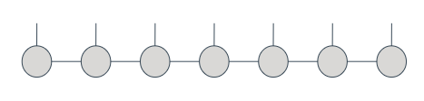

Matrix Product State (MPS) Tutorial¶
import numpy as np
from time import time
import matplotlib.pyplot as plt
from pytket import Circuit, OpType
from pytket.circuit.display import render_circuit_jupyter
from pytket.extensions.cutensornet.structured_state import (
CuTensorNetHandle,
Config,
SimulationAlgorithm,
simulate,
prepare_circuit_mps,
)
Introduction
¶
This notebook provides examples of the usage of the MPS functionalities of pytket_cutensornet. For more information, see the docs at https://docs.quantinuum.com/tket/extensions/pytket-cutensornet/.
A Matrix Product State (MPS) represents a state on n qubits as a list of n tensors connected in a line as show below:

Each of these circles corresponds to a tensor. We refer to each leg of a tensor as a bond and the number of bonds a tensor has is its rank. In code, a tensor is just a multidimensional array:
tensor[i][j][k] = v
In the case above, we are assigning an entry value v of a rank-3 tensor (one [ ] coordinate per bond). Each bond allows a different number of values for its indices; for instance 0 <= i < 4 would mean that the first bond of our tensor can take up to four different indices; we refer to this as the dimension of the bond. We refer to the bonds connecting different tensors in the MPS as virtual bonds; the maximum allowed value for the dimension of virtual bonds is often denoted by the greek letter chi. The open bonds are known as physical bonds and, in our case, each will correspond to a qubit; hence, they have dimension 2 – the dimension of the vector space of a single qubit.
In essence, whenever we want to apply a gate to certain qubit we will connect a tensor (matrix) representing the gate to the corresponding physical bond and contract the network back to an MPS form (tensor contraction is a generalisation of matrix multiplication to multidimensional arrays). Whenever a two-qubit gate is applied, the entanglement information after contraction will be kept in the degrees of freedom of the virtual bonds. As such, the dimension of the virtual bonds will generally increase exponentially as we apply entangling gates, leading to large memory footprints of the tensors and, consequently, long runtime for tensor contraction. We provide functionalities to limit the growth of the dimension of the virtual bonds, keeping resource consumption in check. Read the Approximate simulation section on this notebook to learn more.
References: To read more about MPS we recommend the following papers.
For an introduction to MPS and its canonical form: https://arxiv.org/abs/1901.05824.
For a description of the
MPSxGatealgorithm we provide: https://arxiv.org/abs/2002.07730.For a description of the
MPSxMPOalgorithm we provide: https://arxiv.org/abs/2207.05612.For insights on the reationship between truncation error and the error model in a quantum computer: https://arxiv.org/abs/2004.02388
Basic functionality and exact simulation
¶
Here we show an example of the basic use of our MPS methods. We first generate a simple pytket circuit to be simulated.
my_circ = Circuit(5)
my_circ.CX(3, 4)
my_circ.H(2)
my_circ.CZ(0, 1)
my_circ.ZZPhase(0.1, 4, 3)
my_circ.TK2(0.3, 0.5, 0.7, 2, 1)
my_circ.Ry(0.2, 0)
render_circuit_jupyter(my_circ)
For exact simulation, simply call the simulate function on the circuit and choose a contraction algorithm. To learn more about the contraction algorithms we provide see the Contraction algorithms section of this notebook. You will also need to provide a configuration, the default one is provided by Config(). Custom settings of Config are discussed in the Approximate simulation section.
NOTE: whenever you wish to generate an MPS object or execute calculations on it you must do so within a with CuTensorNetHandle() as libhandle: block; this will initialise the cuTensorNetwork library for you, and destroy its handles at the end of the with block. You will need to pass the libhandle to the MPS object via the method that generates it (in the snippet below, simulate), or if already initialised, pass it via the update_libhandle method.
Due to the nature of Jupyter notebooks, we will be starting most of these cells with a with CuTensorNetHandle() as libhandle:. However, in a standard script, all of these cells would be grouped together and a single with CuTensorNetHandle() as libhandle: statement would be necessary at the beginning of the script.
with CuTensorNetHandle() as libhandle:
my_mps = simulate(libhandle, my_circ, SimulationAlgorithm.MPSxGate, Config())
Notice that my_circ uses a rich gateset – in fact, every single-qubit and two-qubit gate supported by pytket can be used in our MPS approaches. Gates acting on more than two qubits are not currently supported.
The output of simulate is an MPS object encoding the output state of the circuit.
Obtain an amplitude from an MPS
¶
Let’s first see how to get the amplitude of the state |10100> from the output of the previous circuit.
state = int("10100", 2)
with CuTensorNetHandle() as libhandle:
my_mps.update_libhandle(libhandle)
amplitude = my_mps.get_amplitude(state)
print(amplitude)
Since this is a very small circuit, we can use pytket’s state vector simulator capabilities to verify that the state is correct by checking the amplitude of each of the computational states.
state_vector = my_circ.get_statevector()
n_qubits = len(my_circ.qubits)
correct_amplitude = [False] * (2**n_qubits)
with CuTensorNetHandle() as libhandle:
my_mps.update_libhandle(libhandle)
for i in range(2**n_qubits):
correct_amplitude[i] = np.isclose(state_vector[i], my_mps.get_amplitude(i))
print("Are all amplitudes correct?")
print(all(correct_amplitude))
Sampling from an MPS
¶
We can also sample from the output state of a circuit by calling my_mps.sample, where my_mps is the outcome of simulating the circuit.
n_samples = 100
n_qubits = len(my_circ.qubits)
Initialise the sample counter
sample_count = [0 for _ in range(2**n_qubits)]
with CuTensorNetHandle() as libhandle:
my_mps.update_libhandle(libhandle)
for _ in range(n_samples):
# Draw a sample
qubit_outcomes = my_mps.sample()
# Convert qubit outcomes to bitstring
bitstring = "".join(str(qubit_outcomes[q]) for q in my_circ.qubits)
# Convert bitstring to int
outcome = int(bitstring, 2)
# Update the sample dictionary
sample_count[outcome] += 1
Calculate the theoretical number of samples per bitstring
expected_count = [n_samples * abs(state_vector[i]) ** 2 for i in range(2**n_qubits)]
Plot a comparison of theory vs sampled
plt.scatter(range(2**n_qubits), expected_count, label="Theory")
plt.scatter(range(2**n_qubits), sample_count, label="Experiment", marker="x")
plt.xlabel("Basis states")
plt.ylabel("Samples")
plt.legend()
plt.show()
We also provide methods to apply mid-circuit measurements via my_mps.measure(qubits) and postselection via my_mps.postselect(qubit_outcomes). Their use is similar to that of my_mps.sample() shown above.
Note: whereas my_mps.sample() does not change the state of the MPS, my_mps.measure(qubits) and my_mps.postselect(qubit_outcomes) do change it, projecting the state to the resulting outcome and removing the measured qubits.
Inner products
¶
Using vdot you can obtain the inner product of two states in MPS form. This method does not change the internal data of neither of the MPS. Moreover, it can be used on the same MPS object for both inputs, yielding the squared norm of the state.
with CuTensorNetHandle() as libhandle:
my_mps.update_libhandle(libhandle)
norm_sq = my_mps.vdot(my_mps)
print("As expected, the squared norm of a state is 1")
print(np.isclose(norm_sq, 1))
Let’s come up with another circuit on the same qubits and apply an inner product between the two MPS objects.
Generate circuits
other_circ = Circuit(5)
other_circ.H(3)
other_circ.CZ(3, 4)
other_circ.XXPhase(0.3, 1, 2)
other_circ.Ry(0.7, 3)
Simulate them
with CuTensorNetHandle() as libhandle:
other_mps = simulate(libhandle, other_circ, SimulationAlgorithm.MPSxGate, Config())
Let’s calculate the inner product and check that it agrees with pytket’s state vector based computation.
with CuTensorNetHandle() as libhandle:
my_mps.update_libhandle(libhandle)
inner_product = my_mps.vdot(other_mps)
my_state = my_circ.get_statevector()
other_state = other_circ.get_statevector()
print("Is the inner product correct?")
print(np.isclose(np.vdot(my_state, other_state), inner_product))
Mid-circuit measurements and classical control
¶
Mid-circuit measurements and classical control is supported (only in MPSxGate as of v0.8.0). For instance, we can implement the teleportation protocol on a pytket circuit and simulate it:
circ = Circuit()
alice = circ.add_q_register("alice", 2)
alice_bits = circ.add_c_register("alice_bits", 2)
bob = circ.add_q_register("bob", 1)
# Initialise Alice's first qubit in some arbitrary state
circ.Rx(0.42, alice[0])
orig_state = circ.get_statevector()
# Create a Bell pair shared between Alice and Bob
circ.H(alice[1]).CX(alice[1], bob[0])
# Apply a Bell measurement on Alice's qubits
circ.CX(alice[0], alice[1]).H(alice[0])
circ.Measure(alice[0], alice_bits[0])
circ.Measure(alice[1], alice_bits[1])
# Apply conditional corrections on Bob's qubits
circ.add_gate(OpType.X, [bob[0]], condition_bits=[alice_bits[1]], condition_value=1)
circ.add_gate(OpType.Z, [bob[0]], condition_bits=[alice_bits[0]], condition_value=1)
# Reset Alice's qubits
circ.add_gate(OpType.Reset, [alice[0]])
circ.add_gate(OpType.Reset, [alice[1]])
# Display the circuit
render_circuit_jupyter(circ)
We can now simulate the circuit and check that the qubit has been successfully teleported.
print(
f"Initial state:\n {np.round(orig_state[0],2)}|00>|0> + {np.round(orig_state[4],2)}|10>|0>"
)
with CuTensorNetHandle() as libhandle:
state = simulate(libhandle, circ, SimulationAlgorithm.MPSxGate, Config())
print(
f"Teleported state:\n {np.round(state.get_amplitude(0),2)}|00>|0> + {np.round(state.get_amplitude(1),2)}|00>|1>"
)
print(f"Measurement outcomes:\n {state.get_bits()}")
Two-qubit gates acting on non-adjacent qubits
¶
Standard MPS algorithms only support simulation of two-qubit gates acting on neighbour qubits. In our implementation, however, two-qubit gates between arbitrary qubits may be applied, as shown below.
circ = Circuit(5)
circ.H(1)
circ.ZZPhase(0.3, 1, 3)
circ.CX(0, 2)
circ.Ry(0.8, 4)
circ.CZ(3, 4)
circ.XXPhase(0.7, 1, 2)
circ.TK2(0.1, 0.2, 0.4, 1, 4)
render_circuit_jupyter(circ)
with CuTensorNetHandle() as libhandle:
mps = simulate(libhandle, circ, SimulationAlgorithm.MPSxGate, Config())
print("Did simulation succeed?")
print(mps.is_valid())
Note: Even though two-qubit gates on non-adjacent qubits are simulable, the overhead on these is considerably larger than simulating gates on adjacent qubits. As a rule of thumb if the two qubits are n positions apart, the overhead is upper bounded by the cost of simulating n-1 additional SWAP gates to move the leftmost qubit near the rightmost. In reality, the implementation we use is more nuanced than just applying SWAP gates, and the qubits don’t actually change position.
When circuits are shallow, using our approach to simulate long-distance two-qubit gates is advantageous. In the case of deep circuits with many long-distance gates, it is sometimes beneficial to use TKET routing on the circuit, explicitly adding SWAP gates so that all two-qubit gates act on nearest neighbour qubits. Users may do this by calling prepare_circuit_mps, which is a wrapper of the corresponding TKET routing pass.
prepared_circ, qubit_map = prepare_circuit_mps(circ)
render_circuit_jupyter(prepared_circ)
The circuit can now be simulated as usual.
with CuTensorNetHandle() as libhandle:
mps = simulate(libhandle, prepared_circ, SimulationAlgorithm.MPSxGate, Config())
print("Did simulation succeed?")
print(mps.is_valid())
Notice that the qubits in the prepared_circ were renamed when applying prepare_circuit_mps. Implicit SWAPs may have been added to the circuit, meaning that the logical qubit held at the node[i] qubit at the beginning of the circuit may differ from the one it holds at the end; this information is captured by the qubit_map output. We recommend applying apply_qubit_relabelling on the MPS after simulation, relabelling the qubits according to these implicit SWAPs.
print(qubit_map)
mps.apply_qubit_relabelling(qubit_map)
Approximate simulation
¶
We provide two policies for approximate simulation; these are supported by both of our current MPS contraction algorithms:
Bound the maximum value of the virtual bond dimension
chi. If a bond dimension would increase past that point, we truncate (i.e. discard) the degrees of freedom that contribute the least to the state description. We can keep track of a lower bound of the error that this truncation causes.Provide a value for acceptable two-qubit gate fidelity
truncation_fidelity. After each two-qubit gate we truncate the dimension of virtual bonds as much as we can while guaranteeing the target gate fidelity. The more fidelity you require, the longer it will take to simulate. Note: this is not the final fidelity of the output state, but the fidelity per gate.
Values forchiandtruncation_fidelitycan be set viaConfig. To showcase approximate simulation, let’s define a circuit where exact MPS contraction starts struggling.
def random_line_circuit(n_qubits: int, layers: int) -> Circuit:
"""Random circuit with line connectivity."""
c = Circuit(n_qubits)
for i in range(layers):
# Layer of TK1 gates
for q in range(n_qubits):
c.TK1(np.random.rand(), np.random.rand(), np.random.rand(), q)
# Layer of CX gates
offset = np.mod(i, 2) # Even layers connect (q0,q1), odd (q1,q2)
qubit_pairs = [
[c.qubits[i], c.qubits[i + 1]] for i in range(offset, n_qubits - 1, 2)
]
# Direction of each CX gate is random
for pair in qubit_pairs:
np.random.shuffle(pair)
for pair in qubit_pairs:
c.CX(pair[0], pair[1])
return c
circuit = random_line_circuit(n_qubits=20, layers=20)
For exact contraction, chi must be allowed to be up to 2**(n_qubits // 2), meaning that if we set n_qubits = 20 it would require chi = 1024; already too much for this particular circuit to be simulated in a gaming laptop using the current implementation. Instead, let’s bound chi to a maximum of 16. Doing so results in faster runtime, at the expense of losing output state fidelity.
start = time()
with CuTensorNetHandle() as libhandle:
config = Config(chi=16)
bound_chi_mps = simulate(libhandle, circuit, SimulationAlgorithm.MPSxGate, config)
end = time()
print("Time taken by approximate contraction with bound chi:")
print(f"{round(end-start,2)} seconds")
print("\nLower bound of the fidelity:")
print(round(bound_chi_mps.fidelity, 4))
Alternatively, we can fix truncation_fidelity and let chi increase as necessary to satisfy it.
start = time()
with CuTensorNetHandle() as libhandle:
config = Config(truncation_fidelity=0.999)
fixed_fidelity_mps = simulate(
libhandle, circuit, SimulationAlgorithm.MPSxGate, config
)
end = time()
print("Time taken by approximate contraction with fixed truncation fidelity:")
print(f"{round(end-start,2)} seconds")
print("\nLower bound of the fidelity:")
print(round(fixed_fidelity_mps.fidelity, 4))
Contraction algorithms¶
We currently offer two MPS-based simulation algorithms:
MPSxGate: Apply gates one by one to the MPS, canonicalising the MPS and truncating when necessary. In particular, we implemented the algorithm from the following paper: https://arxiv.org/abs/2002.07730.
MPSxMPO: Maintain two MPS copies of the state as it evolves, one updated eagerly using the MPSxGate method and the other updated in batches of up to
klayers of two-qubit gates. Whenever the second MPS is updated, both copies are synchronised and an optimisation algorithm is applied to increase the fidelity of the state. This algorithm is often referred to as DMRG-like simulation. In particular, we implemented the algorithm from the following paper: https://arxiv.org/abs/2207.05612.
TheMPSxGatealgorithm is the one we have been using for all of the examples above. In comparison, theMPSxMPOalgorithm provides the user with two new parameters to tune:k: The maximum number of layers the MPO is allowed to have before being contracted. Increasing this might increase fidelity, but it will also increase resource requirements exponentially. Default value is
4.optim_delta: Stopping criteria for the optimisation when contracting the
klayers of MPO. Stops when the increase of fidelity between iterations is smaller thanoptim_delta. Default value is1e-5.
Bothkandoptim_deltacan be set viaConfig. Below we compareMPSxGateversusMPSxMPOwith default parameters andMPSxMPOwith more resource-hungry parameters. The circuit used is the same as in the previous section.
start = time()
with CuTensorNetHandle() as libhandle:
config = Config(chi=16)
fixed_fidelity_mps = simulate(
libhandle, circuit, SimulationAlgorithm.MPSxGate, config
)
end = time()
print("MPSxGate")
print(f"\tTime taken: {round(end-start,2)} seconds")
print(f"\tLower bound of the fidelity: {round(fixed_fidelity_mps.fidelity, 4)}")
start = time()
with CuTensorNetHandle() as libhandle:
config = Config(chi=16)
fixed_fidelity_mps = simulate(
libhandle, circuit, SimulationAlgorithm.MPSxMPO, config
)
end = time()
print("MPSxMPO, default parameters")
print(f"\tTime taken: {round(end-start,2)} seconds")
print(f"\tLower bound of the fidelity: {round(fixed_fidelity_mps.fidelity, 4)}")
start = time()
with CuTensorNetHandle() as libhandle:
config = Config(k=8, optim_delta=1e-15, chi=16)
fixed_fidelity_mps = simulate(
libhandle, circuit, SimulationAlgorithm.MPSxMPO, config
)
end = time()
print("MPSxMPO, custom parameters")
print(f"\tTime taken: {round(end-start,2)} seconds")
print(f"\tLower bound of the fidelity: {round(fixed_fidelity_mps.fidelity, 4)}")
Note: MPSxMPO also admits truncation policy in terms of truncation_fidelity instead of chi.
Using the logger¶
You can request a verbose log to be produced during simulation, by assigning the loglevel argument when creating a Config instance. Currently, two log levels are supported (other than default, which is silent):
logging.INFOwill print information about progress percent, memory currently occupied by the MPS and current fidelity. Additionally, some high level information of the current stage of the simulation is provided, such as whenMPSxMPOis applying optimisation sweeps.logging.DEBUGprovides all of the messages from the loglevel above plus detailed information of the current operation being carried out and the values of important variables.
Note: Due to technical issues with theloggingmodule and Jupyter notebooks we need to reload theloggingmodule. When working with python scripts and command line, just doingimport loggingis enough.
from importlib import reload # Not needed in Python 2
import logging
reload(logging)
An example of the use of logging.INFO is provided below.
with CuTensorNetHandle() as libhandle:
config = Config(truncation_fidelity=0.999, loglevel=logging.INFO)
simulate(libhandle, circuit, SimulationAlgorithm.MPSxMPO, config)